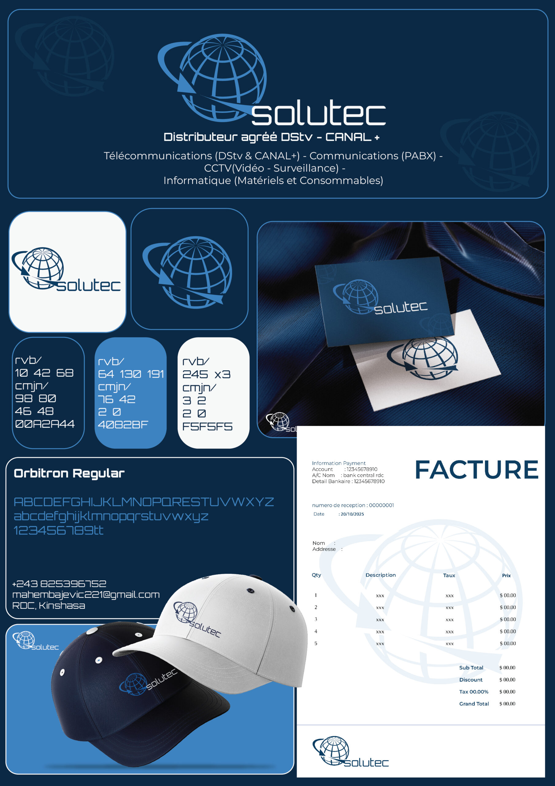
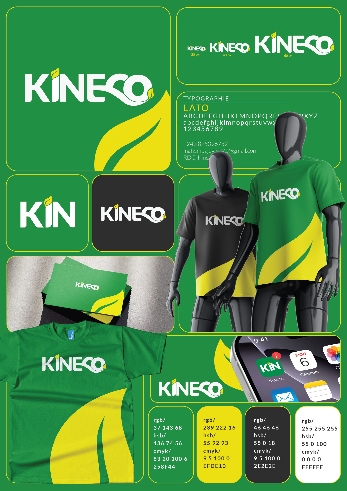
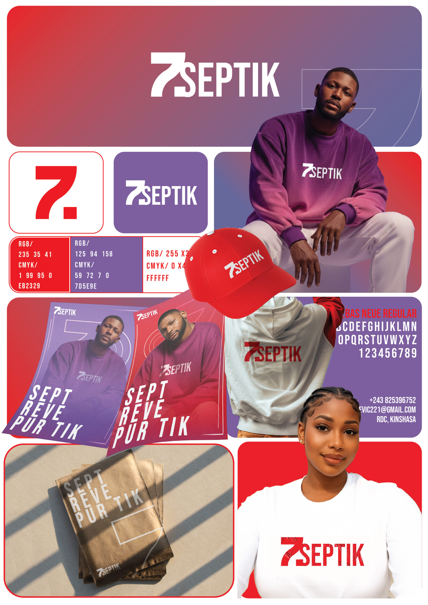
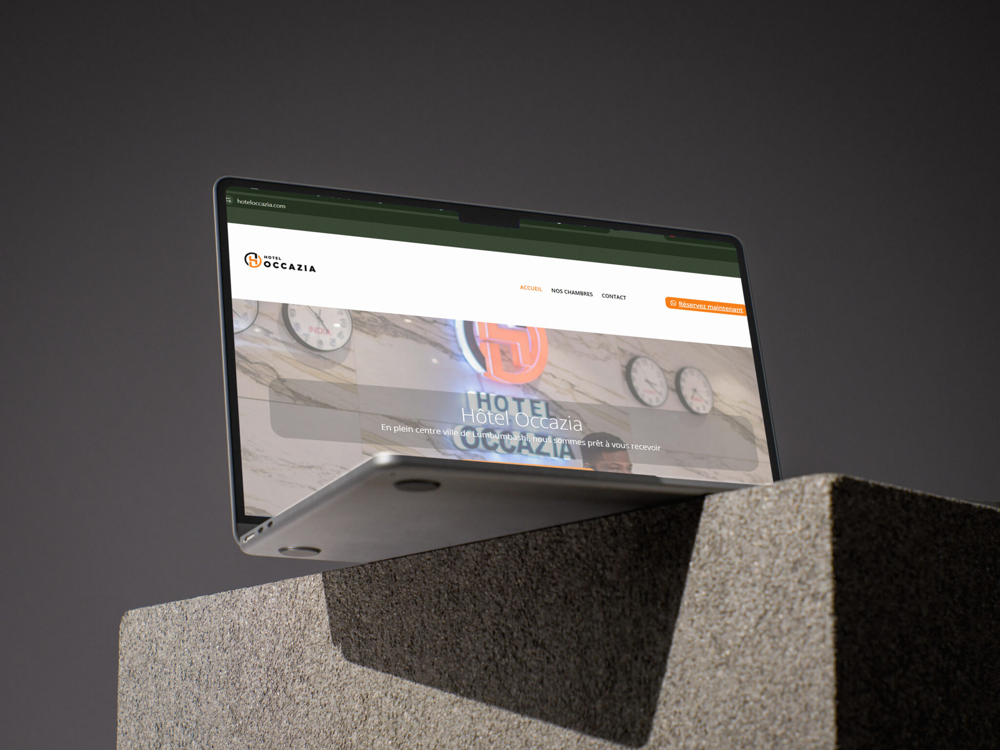
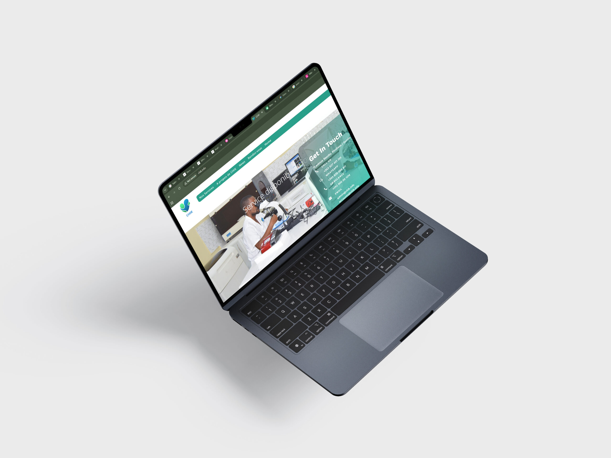
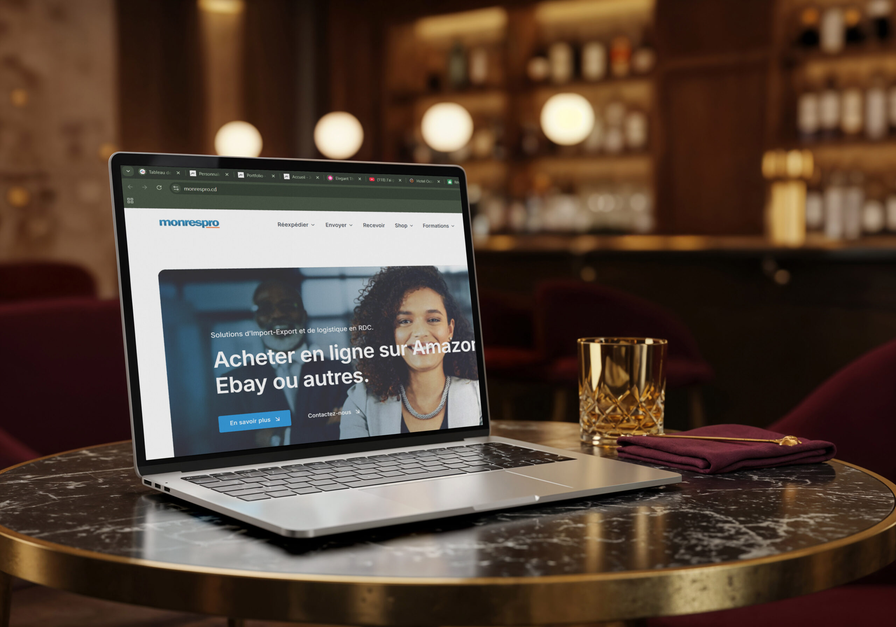

La Gardienne et l'Okapi
Une œuvre onirique alliant la figure féminine à la faune majestueuse, symbolisant une connexion spirituelle profonde avec la nature
Adobe Photoshop
Krita
Découvrir
Découvrez mes réalisations en illustration, digital painting, storyboard, branding, affiches publicitaires et web design. Chaque projet est pensé pour raconter une histoire et transmettre une émotion à travers
Explorer mes compétencesDes illustrations numériques qui donnent vie aux idées grâce à la couleur, la lumière et la narration visuelle
Une œuvre onirique alliant la figure féminine à la faune majestueuse, symbolisant une connexion spirituelle profonde avec la nature

Une illustration minimaliste en "line art" jouant sur les contrastes d'or et de noir, évoquant une harmonie musicale et romantique

Cette illustration numérique vibrante met en scène deux femmes africaines majestueuses, enlacées dans un étreinte fraternelle et empreinte de fierté. Leurs tenues drapées arborent respectivement les couleurs emblématiques du drapeau de la République Démocratique du Congo (RDC) et l'ancien drapeau du Zaïre avec son flambeau. Parées de bijoux dorés, de tresses soignées et de dorures éclatantes sur la peau, elles incarnent le lien indéfectible entre le passé et le présent, célébrant avec élégance la beauté, la force et l'héritage culturel congolais.

Une scène dynamique où le mouvement d'un drapé rouge rencontre la légèreté de papillons dorés dans une atmosphère mystique

Dans la pénombre d'une cellule aux murs de pierre, une femme vêtue d'une robe verte et parée d'ornements dorés est assise à même le sol. Un personnage drapé d'un manteau sombre s'avance vers elle, une lampe à pétrole à la main, projetant une lumière chaude et contrastée sur la scène et révélant un face-à-face chargé de mystère
Des planches storyboardées qui transforment les scénarios en images avant la production finale.

Ce storyboard pour la marque Okapi Mobile met en scène une jeune femme (Miss Okapi) qui danse joyeusement, écoute de la musique et se prend en photo dans un studio avec son téléphone portable. Alors que l'on croit assister au tournage classique d'un spot publicitaire filmé par une caméra professionnelle, la fin révèle un twist : la scène est en réalité entièrement filmée à l'aide de la caméra haute définition d'un autre smartphone Okapi Mobile. Le storyboard se termine sur la présentation du téléphone sous le slogan : "Un nouveau monde de possibilité"

Un groupe de jeunes s'amuse et danse dans un cadre festif ou une soirée. Alors qu'ils discutent, un jeune homme intervient pour leur apporter de la fraîcheur en ouvrant un petit réfrigérateur rempli de bouteilles de la boisson YouZou. La planche se termine sur la présentation du produit bien frais, mettant en avant la boisson gazeuse au citron YouZou

Dans une ambiance festive, un groupe de jeunes profite pleinement de l'instant en dansant et en partageant un moment de convivialité. Pour rafraîchir l'atmosphère, un jeune homme ouvre un mini-réfrigérateur dévoilant des bouteilles de YouZou parfaitement fraîches. Le film se termine par un gros plan sur la bouteille, mettant en avant la fraîcheur irrésistible et le caractère pétillant de la boisson gazeuse au citron YouZou

Ce storyboard publicitaire pour Orange RDC (slogan : « Orange et là ») présente un spot de 30 secondes se déroulant à Kinshasa : Début (Plans 1 à 4) : Le film s'ouvre sur un réveil dynamique de Kinshasa, montrant des habitants connectés dans leur quotidien (une jeune femme assurée, un commerçant inquiet qui retrouve le sourire grâce à une notification de paiement mobile). Développement (Plans 5 à 12) : On suit différents profils (un étudiant, des appels en visio, une ambiance de marché) qui illustrent la fluidité des communications et la connectivité au cœur de la ville. Conclusion (Plans 13 à 15) : Le spot culmine sur une vue d'ensemble inspirante de la ville, avant de mettre en avant le produit et de se conclure sur le logo et le slogan final de la marque

Ce storyboard publicitaire pour Orange (slogan : « ORANGE EST LÀ ») présente un spot de 21 secondes se déroulant à Kinshasa: Début (Plans 1 à 4) : Le film s'ouvre sur le réveil animé de Kinshasa, suivi d'une jeune femme marchant avec assurance, d'un jeune homme recevant un appel important, et de la même jeune femme aidant une personne âgée à traverser. Développement (Plans 5 à 8) : Les trois personnages se croisent au carrefour et reprennent leur chemin dans une ville vivante. La jeune femme sourit en regardant son téléphone, illustrant une ville connectée à travers trois vies et un lien, portée par une voix off évoquant la connexion. Conclusion (Plan 9) : Le spot se termine sur l'apparition du logo Orange, le message final « ORANGE EST LÀ » et une voix off soulignant cet engagement
Création d'univers graphiques cohérents à travers les couleurs, typographies, logos et supports visuels

Création d'une identité visuelle élégante pour une gamme de soins cosmétiques avec design du logo, du packaging, de la palette de couleurs et des visuels publicitaires

Conception de l'identité visuelle d'une marque de mayonnaise, incluant le packaging, les déclinaisons produits, les supports publicitaires et les visuels promotionnels

Conception d'une image de marque professionnelle pour une entreprise technologique, comprenant le logo, les supports administratifs et les éléments de communication corporate

Développement d'une identité de marque cohérente avec conception du logo, de la charte graphique, des vêtements, des cartes de visite et des supports marketing

Création d'une identité visuelle moderne pour une marque de streetwear, incluant le logo, la charte graphique, les vêtements promotionnels et les supports de communication
Des identités graphiques conçues pour représenter une marque avec force, simplicité et mémorisation

Création d'un logo audacieux et minimaliste pour une marque de streetwear, conçu pour transmettre une image forte, urbaine et contemporaine

Conception d'un logo coloré et gourmand pour une marque spécialisée dans les produits à base de fruits, évoquant la fraîcheur, la qualité et la naturalité

Conception d'un logo moderne et dynamique pour une entreprise, mettant en avant son identité, son professionnalisme et son esprit d'innovation

Création d'un logo dédié au patrimoine culturel de la Rumba congolaise, symbole de son histoire, de son héritage artistique et de son importance dans la culture congolaise et mondiale

Logo conçu pour une marque de cosmétiques haut de gamme, alliant élégance, féminité et modernité afin de refléter la beauté naturelle et le soin de la peau
Des affiches conçues pour attirer l'attention, transmettre un message et valoriser une marque ou un événement

Création d'une affiche promotionnelle chaleureuse conçue pour attirer l'attention, renforcer la confiance des consommateurs et mettre en avant le lancement du produit

Réalisation d'un visuel publicitaire valorisant le design premium et les performances du smartphone avec une mise en scène épurée et impactante

Conception d'un visuel publicitaire haut de gamme mettant en avant l'élégance, le soin de la peau et l'identité de la marque à travers une esthétique douce et lumineuse

Création d'une affiche publicitaire dynamique mettant en valeur la fraîcheur, l'énergie et le plaisir de la marque grâce à une composition visuelle percutante

Conception d'une campagne publicitaire élégante qui sublime la beauté naturelle et met en avant les bienfaits d'une lotion hydratante à travers une direction artistique raffinée
Des interfaces modernes pensées pour offrir une expérience utilisateur intuitive, élégante et performante

Hôtel Occazia. Vitrine HôtelièreUn site élégant dédié à l'hôtellerie à Lubumbashi, optimisé pour la conversion avec une mise en avant des chambres et des boutons d'appel à l'action ("Réserver maintenant") pour simplifier le processus de réservation

CHIK. Plateforme de santé Une interface épurée et fonctionnelle conçue pour un laboratoire médical, mettant en avant les services d'urgence 24/7 et intégrant un système de prise de rendez-vous en ligne pour faciliter le parcours patient

Site officiel de la Minière de Bakwanga (MIBA), entreprise publique de la RDC spécialisée dans l'exploitation du diamant. Le site fournit des informations sur l'entreprise, son histoire, ses activités minières, ses projets, sa gouvernance ainsi que ses communiqués et actualités, avec une présentation institutionnelle destinée aux investisseurs, partenaires et au grand public

Site officiel de l'Université Officielle de Mbujimayi (UOM). Il met en avant les programmes de 1er, 2e et 3e cycles, les admissions, les actualités, la gouvernance et les services destinés aux étudiants. Le design moderne valorise l'image de l'université tout en facilitant la navigation

Monrespro. Solutions LogistiquesUne plateforme moderne et dynamique pour un service d'import-export, présentant de manière claire des solutions de réexpédition de colis depuis de grandes enseignes internationales vers la RDC
Chaque projet suit une démarche claire, de la première idée jusqu'à la livraison finale
Analyse du projet, compréhension des objectifs et recherche d'inspirations visuelles
Création des premières idées, croquis et direction artistique du projet
Production graphique avec les outils adaptés pour donner vie au concept
Échanges, ajustements et amélioration du projet selon les besoins
Finalisation et remise des fichiers professionnels prêts à l'utilisation
Créons ensemble une identité visuelle, une illustration ou une expérience digitale qui correspond à votre vision
Discutons de votre projet


{kind=link}
{kind=link}
{kind=link}
{kind=link}